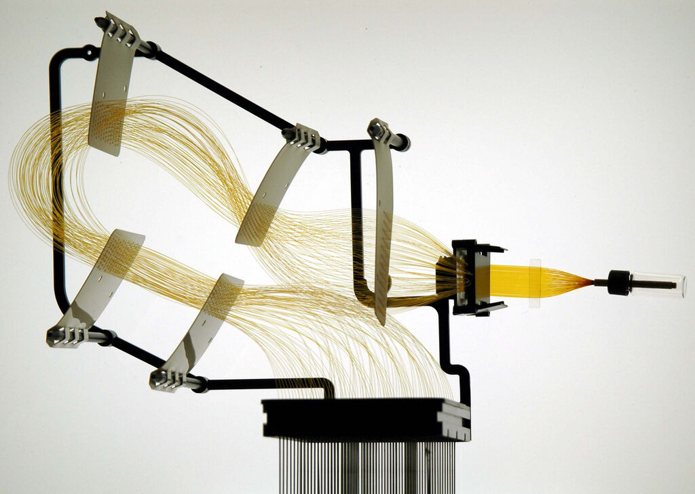
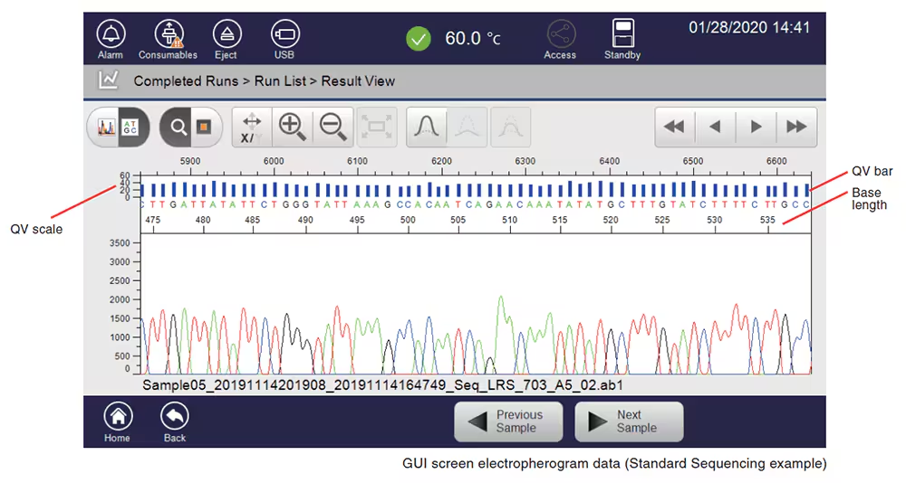

Sanger 시퀀싱 기술 상세
🧬 Sanger 시퀀싱 원리
🔬 기본 원리
DNA 중합효소 연쇄반응
: Template DNA + Primer + DNA polymerase
종결 뉴클레오타이드
: ddNTP (dideoxynucleotide triphosphate)
형광 표지
: 각 염기(A, T, G, C)마다 다른 형광 색소
모세관 전기영동
: 크기별 DNA 분리
⚙️ 시퀀싱 과정
Template DNA 준비 및 프라이머 결합
PCR 반응 (dNTP + 소량의 ddNTP)
다양한 길이의 DNA 조각 생성
모세관 전기영동으로 크기별 분리
형광 검출기로 염기서열 판독
🧪 Sanger 시퀀싱 실험 과정
🧬
1. DNA 추출
• 샘플에서 DNA 분리
• 품질 및 농도 확인
🔬
2. PCR 증폭
• 타겟 DNA 증폭
• 프라이머 설계
🧪
3. 정제
• PCR 산물 정제
• 프라이머/dNTP 제거
⚗️
4. 시퀀싱 반응
• ddNTP 첨가
• 형광 표지 반응
↓
🔥
5. 열변성
• 95°C 변성
• DNA 이중나선 분리
⚡
6. 전기영동
• 모세관 전기영동
• 크기별 분리
📊
7. 형광 검출
• 레이저 검출
• 염기서열 판독
🔬 반응 조건
시퀀싱 반응 구성:
• Template DNA: 100-500ng
• Primer: 3.2pmol
• BigDye: 2μL
• 총 반응액: 20μL
PCR 조건:
• 96°C 1분 (변성)
• 50°C 15초 (결합)
• 60°C 4분 (합성)
• 25 cycles
⚠️ 주의사항
• DNA 품질이 결과에 큰 영향 (260/280 ratio > 1.8)
• 프라이머 농도 최적화 필요
• 반응 후 미반응 ddNTP 제거 중요
• 전기영동 시 기포 발생 방지
🔬 ABI 3730xl 모세관 시퀀서

ABI 3730xl DNA Analyzer - 96개 모세관으로 고처리량 Sanger 시퀀싱 수행
📊 시퀀싱 결과 예시

Hitachi DS3000 시퀀싱 결과 - 크로마토그램과 염기서열 분석 리포트
🏠 처음
◀ 이전
다음 ▶
⛶ 전체화면
슬라이드 4 / 21